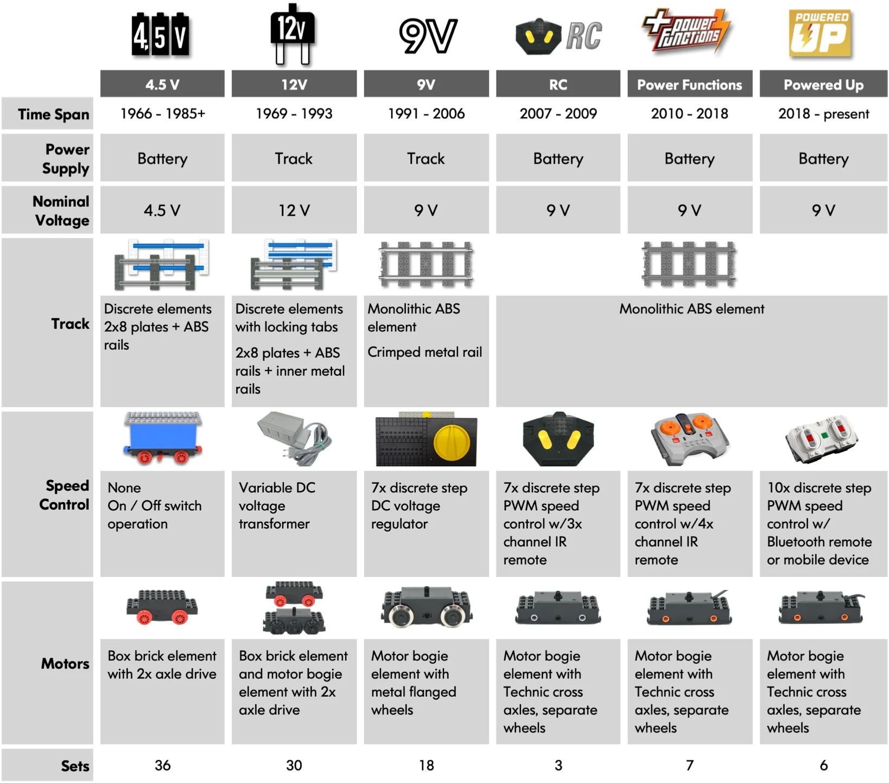
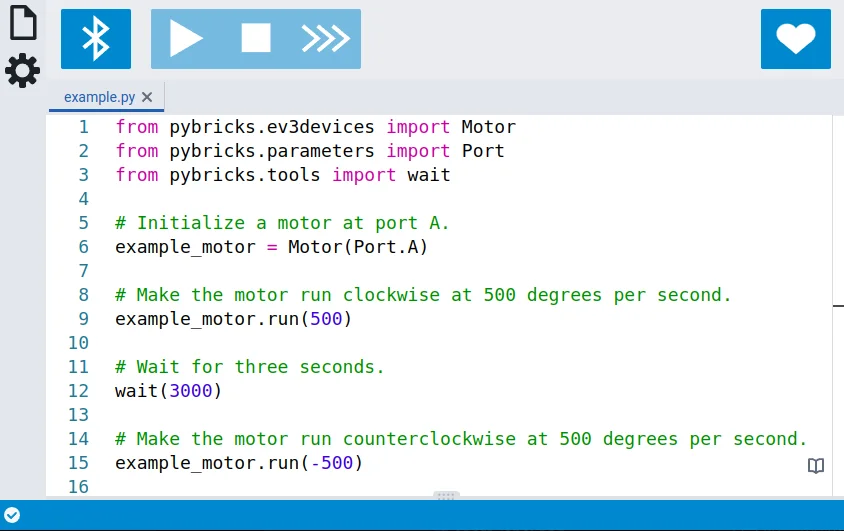
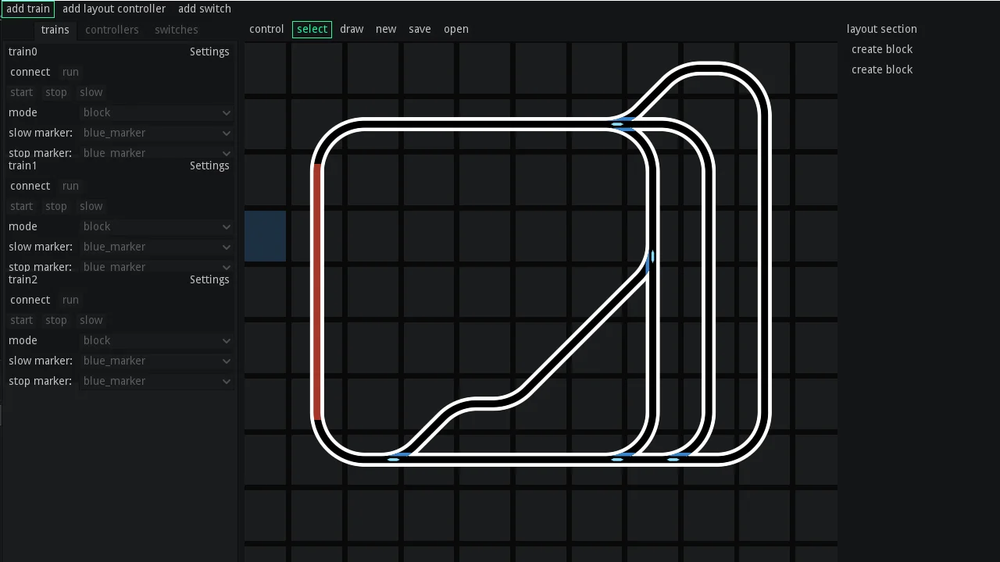
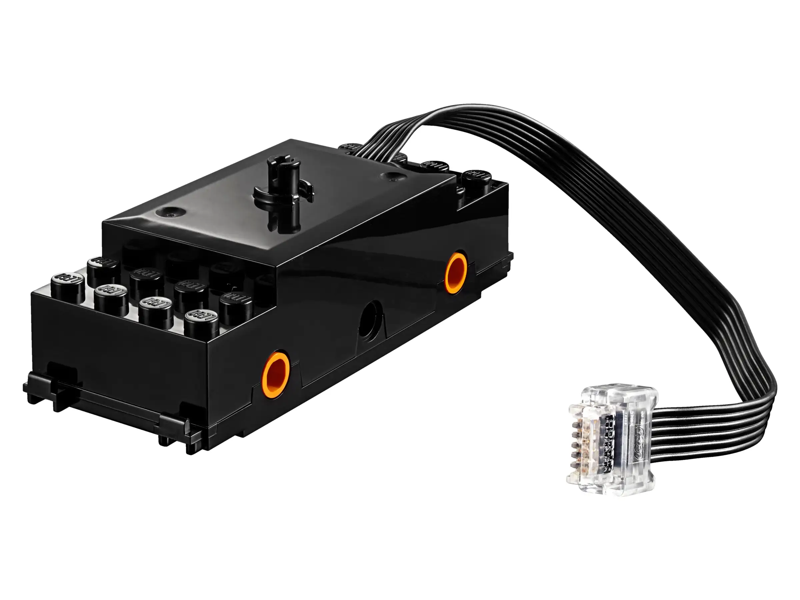
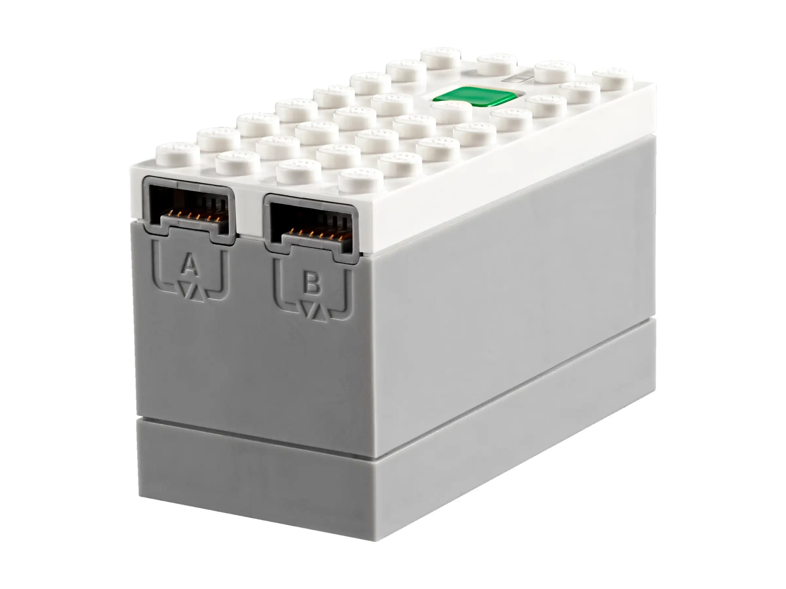
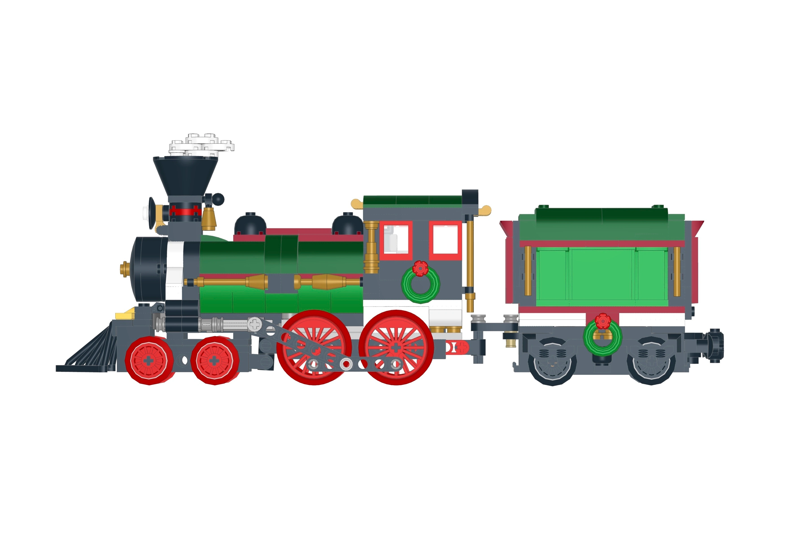
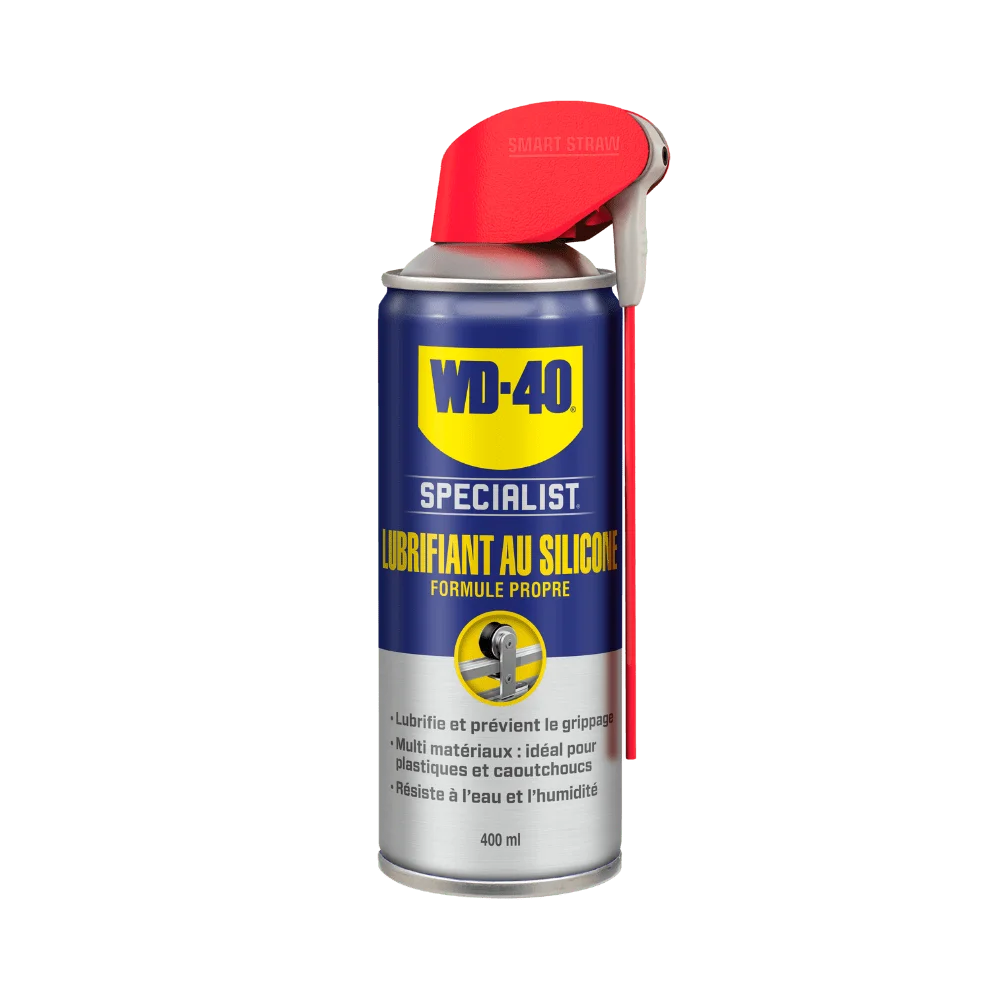
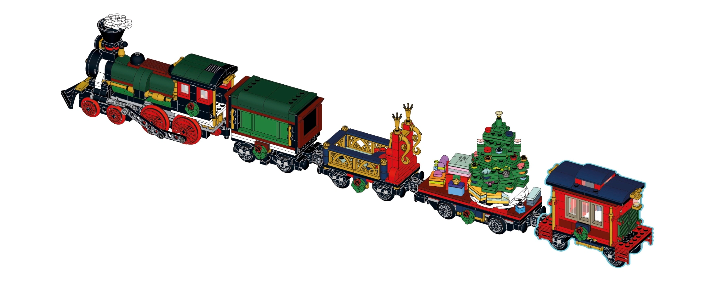
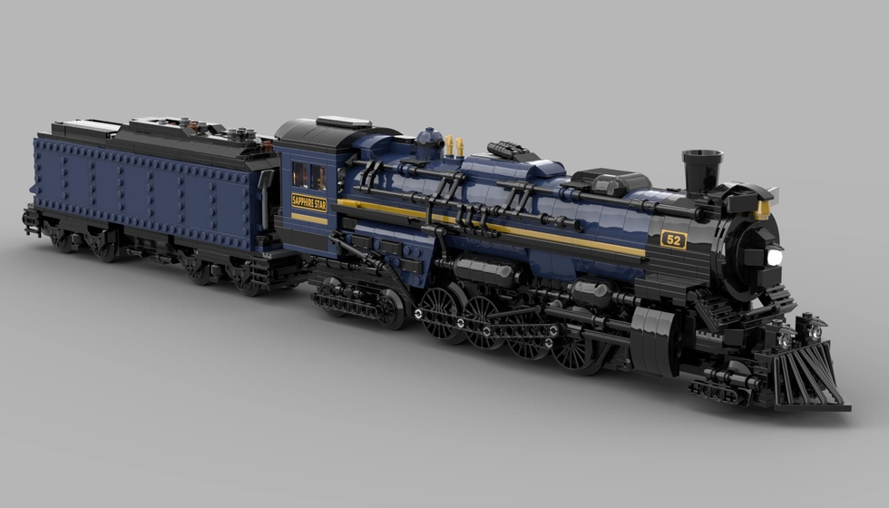
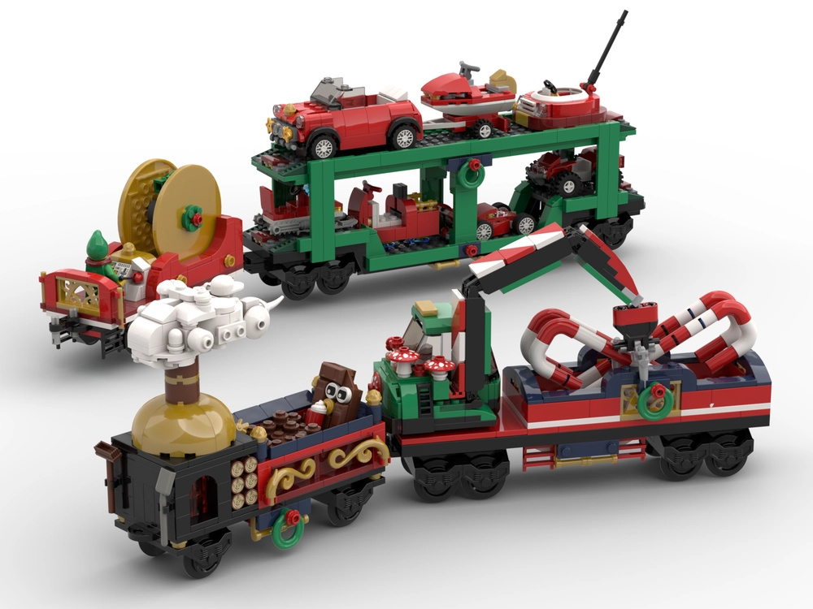

Choix du système de contrôle
Dès nos débuts avec le Brick Winter Burrow, nous savions que le train serait l'une des animations les plus saisissantes de notre diorama. Nous avons d'abord opté pour le sublime "Winter Holiday Train" (Set 10254) qui possédait une certaine identité visuelle, avant de nous tourner vers les MOCs d'AFOLs talentueux, puis d'essayer d'apporter davantage de détails personnels à notre locomotive et nos wagons.
Cette introduction à la motorisation grâce au train nous a amenés à considérer le mouvement comme une chose à part, un domaine particulier. Car qui dit mouvement dit moteur.
Lorsque nous nous sommes lancés dans cette aventure de l'animation, nous avons commencé à créer certains prototypes avec le stock de références que nous avions, toutes utilisant le système Power Functions. Certains choix artistiques nous ont ensuite amenés à découvrir et tester la génération de moteurs suivante : le Powered UP.
Ce système sans fil s'est révélé être un vrai coup de cœur. Sans câbles encombrants, et d'une prise en main intuitive, Powered UP nous permettait de profiter pleinement de notre train chez nous.
Mais ce système était-il vraiment adapté aux expositions ?
Rappel des différentes évolutions
Avant de répondre à la question posée en introduction, nous pensons qu'il est nécessaire de rappeler la riche histoire du train chez LEGO. Les différentes gammes sont effectivement nombreuses.
Nous ne nous attellerons pas à cet exercice car d'autres l'ont fait avant nous1,2,3, et ce, de manière remarquable. Nous nous contenterons seulement de mentionner les grandes lignes.
Parmi les travaux de recherche effectués que nous avons consultés, nous pensons en particulier à l'excellent article "Making Trains Move: The History of LEGO Trains, Track, Motors and More"4 de Michael Gale, disponible sur le site BrickNerd. L'auteur a réussi, en une simple image, à résumer les différentes gammes de train que LEGO a produit au cours de son histoire.
{kind=link}

Les questions aux 1000 réponses
Deux grandes divisions
Dans cet article, Michael Gale différencie les gammes de train LEGO en deux familles :
- Les trains alimentés par les rails (de 1966 jusqu'à 2006)
- Les trains alimentés par batteries (de 2007 jusqu'à aujourd'hui)
{kind=link}
Cette approche est simple, efficace, et permet de mettre en avant un premier dilemme ; entre le courant et les piles, il faut choisir.
S'orienter vers les piles ou une alimentation secteur est souvent effectivement la première question que les passionnés de train LEGO5,6,7,8 se posent.
Quel est le meilleur système ?
Vient ensuite une autre interrogation qui fait grand débat : quel est le meilleur système ? On pourrait même se demander de manière plus large : quelle génération de moteurs choisir pour l'animation d'un diorama ?
Cette interrogation est aussi source à débats9,10,11, de la part de passionnés sur un sujet passionnant !
Pour répondre simplement, il n'y a pas de bonne solution, tant les besoins de chacun sont différents. Qu'il s'agisse du système 9V, Power Functions ou Powered UP, énormément de prouesses ont été réalisées.
Nous avons en tête quelques exemples :
- Pour le système 9V, nous pensons au réseau magistral13,14 de l'AFOL Daniel Repond (YouTube, Eurobricks Forums), ou à la simulation du circuit de charbon piloté par Arduino12 de l'AFOL AlmightyArjen (YouTube, Eurobricks Forums, Facebook, Instagram, Patreon, Twitter).
- Toujours en utilisant la technologie Arduino et avec la librairie LEGO Power Functions IR, l'AFOL Richfilth (Site, YouTube, Eurobricks Forums, BrickLink) montre comment il utilise les systèmes 9V et Power Functions pour simuler certaines actions utiles à un réseau ferroviaire, telles que changer automatiquement la direction d'un aiguillage15 ou gérer deux trains sur une seule boucle de rails16.
- Dans sa playlist YouTube "The LEGO 9V Train Speed Regulator"17, l'AFOL BatteryPoweredBricks (YouTube, Eurobricks Forums, Facebook, Reddit) montre quant à lui comment il réussit à alimenter le système Power Functions avec le transformateur du "Transformer and Speed Regulator" (Set
4548). - Le système Powered UP n'est pas en reste en termes de prouesses techniques et offre également de nombreuses possibilités, que ce soit avec des outils tels que PyBricks18 ou Brickrail19,20.
{kind=link}

{kind=link}

Notre choix
Face aux nombreuses possibilités qui s'offraient à nous, choisir un système de contrôle n'a pas été une mince affaire.
Étudier chaque génération de moteurs a rapidement soulevé de nouvelles interrogations. Les idées se sont même bousculées avec enthousiasme : devions-nous ajouter un passage à niveau automatisé à notre diorama ? Pourquoi pas considérer un aiguillage dans notre réseau ?
Après plusieurs expérimentations et évènements face à un public, nous partageons dans les lignes suivantes pourquoi le système 9V nous est apparu comme le plus adapté à nos besoins.
La gourmandise du système Powered UP
C'est durant notre première exposition (cf. article de blog intitulé "Retour exposition : Des Briques pour le Téléthon 2023") que nous nous sommes rendus compte que le système Powered UP n'était pas une solution viable.
Batteries et tender
Sur le papier, le MOC "Motorized and Improved Christmas Train"21 de l'AFOL seejay, que nous avions choisi à l'époque, avait pourtant tout pour plaire et semblait prometteur. En effet, son créateur avait réussi à allier réalisme et authenticité tout en incluant les 3 pièces maîtresses du système Powered UP :
- La "Electric, Powered Up 9V Battery Box Bluetooth HUB with Light Bluish Gray Bottom" (Réf.
bb0892c01) - La "Electric, Powered Up Bluetooth Speed Remote Control Unit with Light Bluish Gray Base" (Réf.
28739c01) - La "Electric, Powered Up Train Motor 9V RC Train with Integrated Attachment, Orange Wheel Holders" (Réf.
bb0896c01)

{kind=link}

Ces références, toutes nécessaires pour créer du mouvement, sont peu esthétiques, imposantes et donc difficiles à dissimuler.
Là où ce MOC se démarquait particulièrement, c'était dans l'utilisation du tender pour y cacher la batterie, la "Powered Up 9V Battery Box" (Réf. bb0892c01).
L'idée de détourner ce wagon, traditionnellement placé après la locomotive pour simuler son approvisionnement en combustible (i.e. bois, charbon, gazole) et en eau22, à des fins pratiques nous a immédiatement séduits.
{kind=link}

{kind=link}

Gouffre à piles
Seulement, le système Powered UP est gourmand en piles. Très gourmand.
La "Electric, Powered Up 9V Battery Box Bluetooth HUB with Light Bluish Gray Bottom" (Réf. bb0892c01) nécessite à elle-seule 6 piles de type "AAA"23. Rien que ça ! Et un train qui avance sur ses rails pendant des heures durant consomme, et pas qu'un peu. Nous en avons fait les frais.
En effet, au cours de la première journée d'exposition, nous avons dû changer les piles une première fois, en fin de matinée. Par précaution et pour éviter au maximum le gaspillage, nous avions emmené un multimètre pour mesurer la tension de ces piles. Nous pouvions ainsi écarter celles qui étaient définitivement inutilisables, et prolonger l'utilisation de celles dont la charge restante était encore suffisante.
Voyant l'énergie consommée en l'espace de quelques heures, nous avons dû anticiper pour le deuxième jour de l'exposition, un dimanche. Nous sommes donc allés en catastrophe au supermarché du coin nous procurer un nouveau jeu de piles.
Pour ne rien arranger, après plusieurs dizaines de tours sur notre réseau ferré, nous avons remarqué certaines frictions sur nos wagons ; les roues forçaient dans les virages. Depuis ce jour, afin de contrer ce problème, nous emmenons avec nous à caque exposition, une bouteille de WD-40, spécialement dédiée au silicone24 afin de réduire les potentiels frottements.
{kind=link}

Passage au 9V
Au total, ce ne sont pas moins de 15 piles qui ont été englouties par notre train en l'espace de deux jours. Et quelle quantité nous aurait-il fallu si nous avions plus de wagons ? Probablement davantage.
Priorité absolue
Cette première exposition derrière nous, nous en sommes arrivés à la conclusion que le système 9V serait bien plus adapté à nos besoins ; plus de gestion de batteries, tout alimenter par secteur, et notre train pourrait tourner en continu.
Les visiteurs aimant particulièrement l'observer lorsqu'il sortait du tunnel, nous voulions être certain que notre locomotive puisse rouler sans interruption.
Avec l'idée de faire aussi bien, si ce n'est mieux, pour notre deuxième évènement public, ce changement de système était devenu une de nos priorités pour l'année à venir (cf. articles de blog "Retour exposition : Cahors Bricks Expo 2024" et "Bilan 2024").
{kind=link}

Nouvelles acquisitions
Nous l'évoquons en détail dans la section "Notre histoire avec le train LEGO", mais rappelons ici que nous possédions déjà quelques modèles liés au système 9V. La conversion s'est donc faite sans problème.
Néanmoins, pour que le passage de notre locomotive à cette ancienne génération de trains soit complet et fonctionnel, il a tout de même fallu nous procurer quelques nouvelles pièces :
- La "Electric, Train Motor 9V with Wheels" (Réf.
590). Il s'agit du moteur principal et peut être déniché sur des sites d'occasion comme leboncoin ou bien évidemment, BrickLink. Celui que nous avions avec la "Burlington Northern Santa Fe (BNSF) Locomotive" (Set10133) commençait à montrer des signes d'usure - La "Train Motor 9V Decorative Side with Closed Hub Points" (Réf.
2871). Contrairement à la "Train Motor 9V Decorative Side with Open Hub Points" (Réf.2871b) utilisée sur notre MOC, cette pièce est compatible avec le système 9V
Au revoir aux systèmes sans-fils ?
Une fois ce changement de système effectué, devions-nous placarder les alternatives sans fil ? L'alimentation par secteur se suffit-elle à elle-même ? La réponse courte est "non".
En effet, même encore aujourd'hui, nous gardons précieusement les systèmes Power Functions et Powered UP de côté. Avec le temps, nous avons vu qu'ils pouvaient se révéler utiles dans plusieurs cas de figure. Pour n'en citer que deux :
- Avoir une seconde locomotive fonctionnant entièrement sur batteries peut se révéler essentiel dans une salle d'exposition sans courant. Même si nous n'avons jamais vécu cette situation, nous savons que certaines organisations ne proposent pas de sortie électrique aux exposants. D'autre part, le système 9V étant vieillissant, des cas d'usure peuvent potentiellement amener à un dysfonctionnement du train et entacher une exposition.
- Au-delà du côté pratique, l'aspect esthétique peut également justifier le recours à une alternative à piles. Disposer de deux trains aux caractères différents, comme ceux montrés dans les images ci-dessous, offre en effet une belle flexibilité : il devient possible de les alterner au cours d'une exposition, apportant ainsi un peu de variété aux visiteurs.
{kind=link}

{kind=link}

Retour sur notre choix
Le choix d'un système de contrôle pour un train LEGO est le parfait exemple d'une problématique à laquelle il n'existe pas de solution idéale. Chaque génération de moteurs a apporté son lot de nouveautés, créé des communautés différentes, avec des projets de plus en plus fous, mais toujours passionnants.
En tant qu'exposants, avoir un train alimenté par secteur nous a paru être l'option la plus judicieuse. Depuis cette transition vers le système 9V, et malgré son grand âge, nous n'avons jamais rencontré de défaillance technique et avons toujours été ravis !
Sources
BatteryPoweredTrains: What is the best LEGO train control system? ↩
BrickNerd: Making Trains Move - The History of LEGO Trains, Track, Motors and More (Archive) ↩
Reddit: What is the best LEGO train control system? (Archive) ↩
Eurobricks Forums: What is the best LEGO train control system? (Archive) ↩
Eurobricks Forums: Is it worth it to get into 9V trains now? (Archive) ↩
Eurobricks Forums: Getting started in LEGO Trains - What to buy? (Archive) ↩
AlmightyArjen: Huge LEGO train coal terminal fully automated by Arduino ↩
BatteryPoweredBricks: "The LEGO 9V Train Speed Regulator" Playlist ↩
BatteryPoweredBricks: Using PyBricks to control LEGO trains ↩
Novakasa: Brickrail LEGO train automation - Alpha release trailer ↩
Rebrickable: seejay's Motorized and Improved Christmas Train (Archive) ↩
Atlanta Brick Co: LEGO Powered Up Hub, Set #88009-1 (Archive) ↩